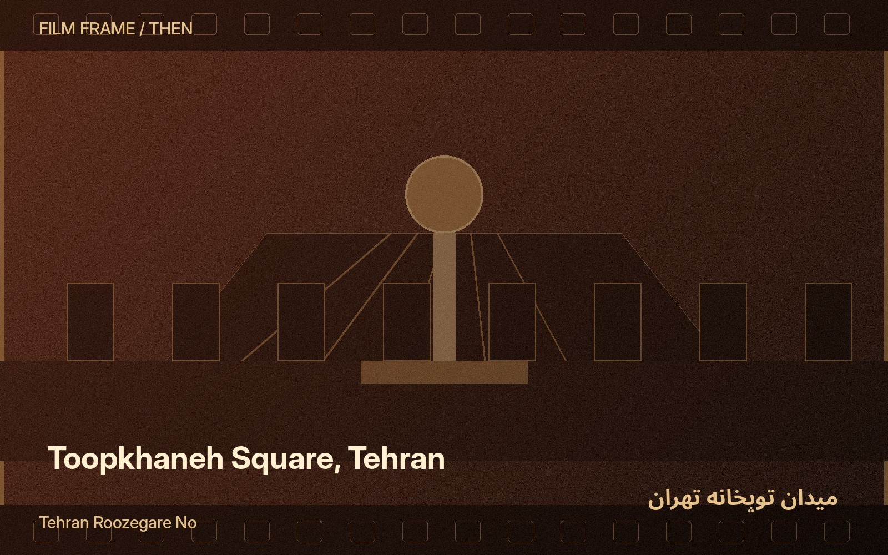
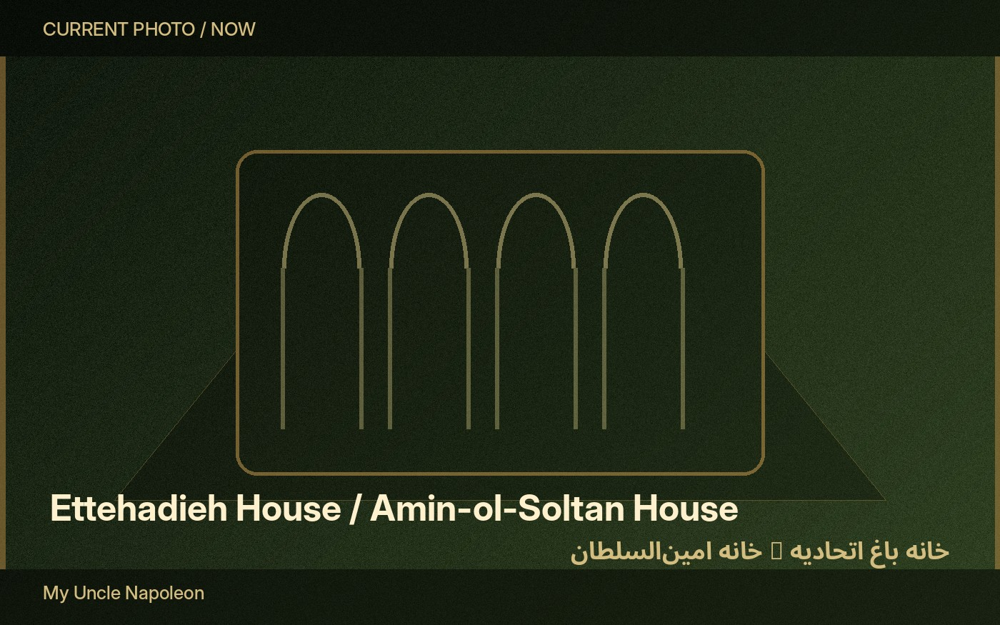
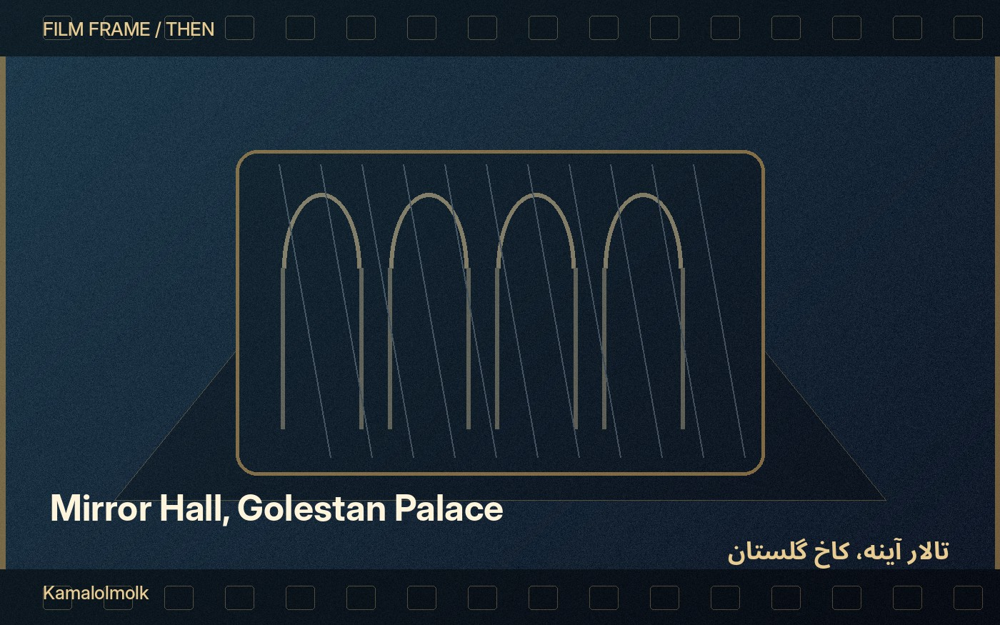

Narrative itinerary
Tehran performs itself
Select a story. The chapter sequence, item order, map numbering and previous/next navigation adapt automatically.



Story controls
Offline atlas map
All locations in relative geographic position
The diagram plots the supplied coordinates without using an external map library. Each marker opens its location page. Use the outbound route links for live directions.
Location Narrative order